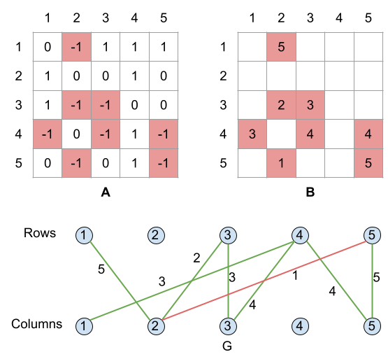

Suppose we know a subset $$$S$$$ of elements of the matrix $$$\mathbf{A}$$$ because they are either given in the input or revealed by Edsger. Can we restore the remaining elements? If there is only one unknown element in some row or column, we can recover its true value from the known elements in that row or column and the respective checksum. We can apply such an element recovery step until all elements are known or we end up with a matrix where each row and column has at least two unknown elements (aside from fully reconstructed rows and columns). It will be shown later that the whole matrix can be restored using this simple strategy or the subset $$$S$$$ does not provide enough information to do so.
For the small test set, we can examine every potential subset $$$S$$$ of matrix elements and check if $$$S$$$ is sufficient to restore the whole matrix. Among all sufficient subsets $$$S$$$, we pick the smallest in terms of hours as our answer.
Given a subset $$$S$$$ of known elements, the above matrix recovery strategy can be implemented in $$$O(\mathbf{N}^2)$$$ time. For example, we can use a BFS-like algorithm iterating over a queue of elements that are the only unknown elements in their rows or columns and calculating their true values one by one. For the sake of efficiency, we also need to maintain the XOR values of currently known elements for each row and column as well as the number of unknown elements per each row and column. As soon as the number of unknown elements for a row or column becomes $$$1$$$, we add that element to the queue.
There are $$$O(2^{\mathbf{N}^2})$$$ subsets of elements. Consequently, the overall time complexity of this brute-force algorithm is $$$O(2^{\mathbf{N}^2} \times \mathbf{N}^2)$$$.
Let us look at our problem from graphs perspective. Namely, we construct a weighted bipartite graph $$$G$$$, where the rows and columns of the matrix $$$\mathbf{A}$$$ are represented by nodes in $$$G$$$, and there is an edge of weight $$$\mathbf{B_{i,j}}$$$ between $$$i$$$-th row and $$$j$$$-th column if and only if $$$\mathbf{A_{i,j}} = -1$$$. Please see the below example to make the construction more clear.
An isolated node represents a row or column with all its elements known. We can safely disregard such nodes. A leaf node with exactly one incident edge represents a row or column with precisely one unknown element. Note that the process outlined in the first paragraph corresponds to repeated removal of leaves from the graph. If we end up with an empty graph in this way, it means that the original graph must have been a forest without any cycles and we can recover the full matrix without spending any time.
So what if the graph $$$G$$$ does contain a cycle? Given any assignment of binary values to the elements of the matrix, we can flip the values of elements corresponding to the edges of a cycle, and this operation would not change the XOR checksum of any row or column. Consequently, we cannot tell the true value of elements on a cycle unless we reveal at least one of them, and effectivelly break the cycle by removing the edge from the graph and paying a delicious price. In other words, in order to be able to recover the whole matrix, it is necessary to break all cycles by revealing and removing some edges. It is also sufficient — once all cycles have been broken, what remains is a forest of edges, and the true value of all remaining edges can be determined unambiguously.
Thus we have reduced the original problem to finding a minimum weight subset of edges that breaks all cycles. An intuitive greedy approach involves iterating over the edges in a non-decreasing order of weights and removing the current edge from the graph if it is part of a cycle. An edge is part of a cycle if there is a simple path between its end-nodes other than the edge itself — a condition that can be tested by, say, running a depth-first search from one of the end-nodes.
In our example above, once we remove the cheapest edge of cost $$$1$$$ (the red edge), what remains is a tree, so no other edges will be removed.
Since there can be up to $$$\mathbf{N}^2$$$ edges, the above steps are repeated $$$O(\mathbf{N}^2)$$$ times. One run of the depth-first search costs $$$O(\mathbf{N}^2)$$$ time as well, so the overall time complexity of this approach is $$$O(\mathbf{N}^4)$$$.
But what about the correctness of this greedy approach? The proof is very similar to that of Kruskal's algorithm. Consider the first edge $$$e$$$ that is removed by the algorithm, so it has the smallest weight among all edges on cycles. In particular, suppose that $$$e$$$ is part of a cycle $$$C$$$. Now, consider any cycle breaking set of edges $$$X$$$ that does not include $$$e$$$. Since the cycle $$$C$$$ must be broken, $$$X$$$ must contain an edge $$$f \neq e$$$ that is also part of the cycle $$$C$$$. The set of edges $$$Y = X - f + e$$$ has a total weight no larger than the weight of $$$X$$$ and it is cycle breaking as well. To prove the second claim, assume the contrary that the graph $$$G - Y$$$ contains a cycle $$$C'$$$, which necessarily includes the edge $$$f$$$ and does not include the edge $$$e$$$. But then we can combine the paths $$$P = C - f$$$ and $$$P' = C' - f$$$ to form a cycle in $$$G - X$$$, which contradicts the fact that $$$X$$$ was cycle breaking. It follows that the edge $$$e$$$ is part of some optimal solution and our greedy choice was valid.
Of course, the problem of finding a minimum weight cycle breaking edge set is equivalent to the well known problem of finding a maximum weight spanning forest of $$$G$$$, except that we would build the complement set of edges to keep rather than the set of edges to remove. In the example above, the edges of the maximum weight spanning forest are rendered green. It would cost Grace one hour (the red edge) to reconstruct the whole matrix.
The graph may potentially have up to $$$\mathbf{N}^2$$$ edges, therefore, a simple implementation of Prim's algorithm without maintaining a priority queue data structure would achieve an $$$O(\mathbf{N}^2)$$$ time complexity. Note that because of the high density of the graph, Prim's algorithm is a better choice than Kruskal's algorithm, as the later would need $$$O(\mathbf{N}^2 \times \log \mathbf{N})$$$ time for sorting the edges.
It is interesting to note that we never use the actual checksums in the graph construction nor the maximum spanning forest algorithm, therefore, the input values $$$\mathbf{R_i}$$$ and $$$\mathbf{C_i}$$$ can be safely ignored.